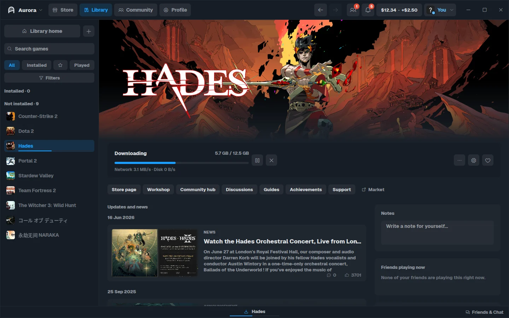
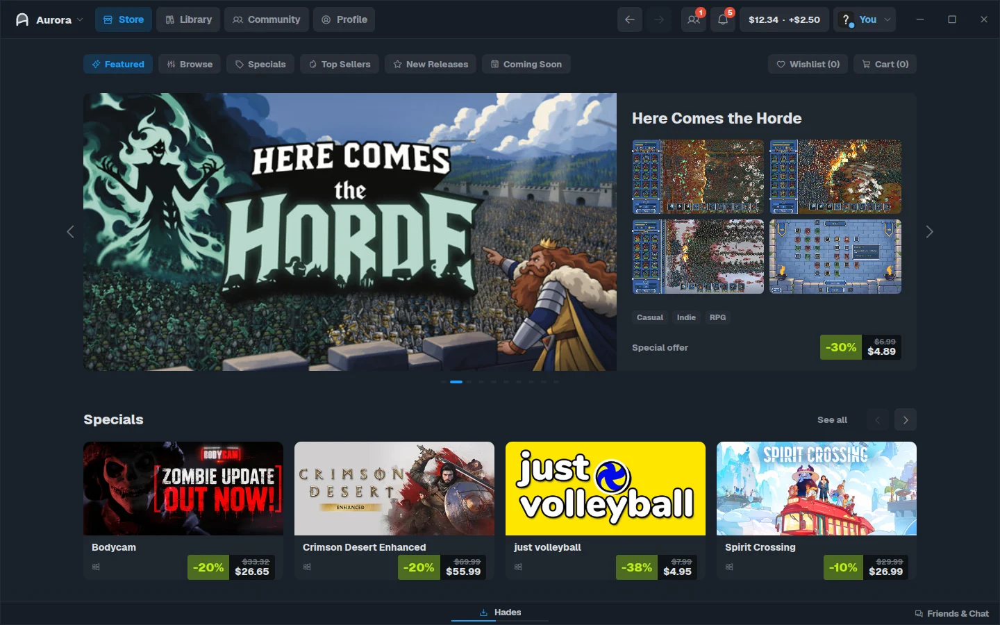
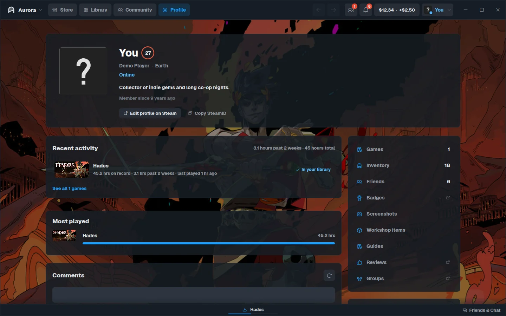
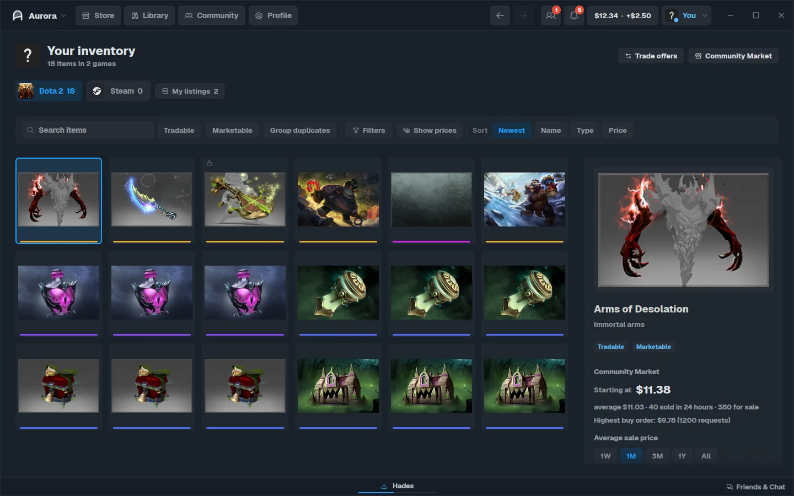

Your Steam library. None of the bloat.
A native Steam client written in Rust. All your games, without a browser hiding inside.

Everything you open Steam for, drawn natively.
Store, library, downloads, friends, chat, Workshop, inventory, Market and Steam Cloud, in one process rendered with egui. It signs in to your own account and talks to Steam's servers directly.




Library. Recent games, every game in a grid you can resize, collections and filters in the sidebar. Non-Steam games sit next to the rest.
One window. No webhelper.
Store with trailers
Browse, search, wishlist and fill your cart. Trailers play in the client (ffmpeg on Linux); checkout opens Steam's website.
Library and collections
Collections, filters, hidden games, your own library folders and non-Steam games.
Downloads
Install, update and pause games, straight from Steam's content servers.
Friends and chat
See who's online and in game, and chat without opening a browser window.
Workshop
Browse a game's Workshop and subscribe to mods without leaving the client.
Inventory and Market
Items from every game, Market prices and price history, and your own listings.
Steam Cloud
Saves sync before and after you play, for every game that uses the Cloud.
Themes
NEVKO, Midnight, Aurora, Classic, OLED and Daylight, each with its own accent and corner radius.
Plugins and offline mode
Extend the client with plugins, and keep playing installed games when Steam is unreachable.
Aurora picks how to start each game.
On Linux, native games, Windows games, Steam DRM and anti-cheat each get their own path. Games with both builds run the Linux one, and Manage › Compatibility switches any game to a Proton version you choose.
Native Linux games
Directly
Your own Steam's steamclient.so, on a windowless Steam host
Windows games
Proton: Steam's default, or the one you pick
Aurora's own steamclient: achievements, stats, cloud, lobbies, Workshop
Steam DRM (SteamStub)
Proton, on the windowless Steam host
Valve's engine answers the DRM check itself
Anti-cheat
VAC, Easy Anti-Cheat, BattlEye
Through the official Steam client, or on the windowless host (experimental)
Steam's own, from Valve's engine either way
The windowless Steam host is your installed Steam's engine without its interface: no steamwebhelper, no Chromium. It checks ownership itself, so it can't start a game you don't own. Running anti-cheat games on it (Settings › Library) is experimental, and the anti-cheat may count it as an unsupported setup and ban you.
Same PC, same account, a fraction of the weight.
How it was measured
- Versions
- Aurora 0.7.2, Steam build 1792618285 without mods
- CPU
- Ryzen 7 5700X
- GPU
- GeForce RTX 5070
- Memory
- 16 GB
- System
- CachyOS, GNOME on Wayland
- Date
- 16 November 2026
Each figure is the median of 3 runs after a warm-up run. Idle figures are taken 45 s after the main window opened, CPU over the next 30 s. Steam's first window is its sign-in window; Aurora's is its account picker. Steam's size leaves out games, user data, caches and compatibility tools.
Method, script and every run Get Aurora.
Every build is on the latest GitHub release. On Linux, Aurora needs Steam installed for Proton and the Steam host; store trailers need ffmpeg, and libpulse for sound.
Linux
.tar.gz · x86_64Unpack anywhere and run it.
Latest release Arch Linux
.pkg.tar.zstInstall with sudo pacman -U.
Windows installer
Setup .exe · 10 & 11Installs and keeps itself up to date.
Latest release Windows portable
.zipNo installer. Unzip and run.
Latest release Build from source
Needs Rust. The Windows steamclient DLLs that Proton games load are built by CI; copy them next to the binary from a release. --demo opens the client with sample data, without signing in.
$ git clone https://github.com/mollie2999/Aurora.git $ cd Aurora $ cargo build --release -p steam-rs -p steamhost $ target/release/steam-rs # sign in with your account $ target/release/steam-rs --demo # sample data, no sign-in
Your account stays yours.
Your sign-in
Aurora signs in the way the official client and the Steam Mobile app do. Your sign-in stays on your PC and is only sent to Steam.
Anti-cheat
By default, anti-cheat games always run through Valve's own client. The windowless host for them is opt-in and marked experimental.
No telemetry
Aurora connects to Steam, GitHub for updates, an exchange-rate service for gift regions and, if you add a key, IsThereAnyDeal. Nothing else.